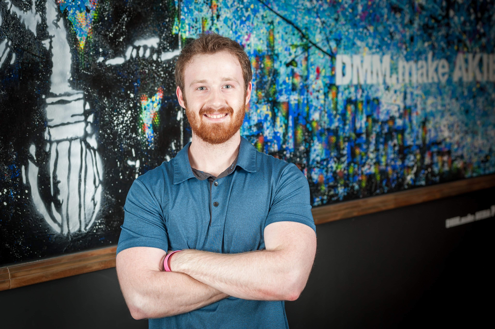

Joseph Fadely

Objective
I am a Software Engineer looking for a software-oriented position to apply and expand the knowledge I have
accumulated from over five years of experience at Lockheed Martin.
Education
Texas Tech University, Lubbock, TX
Graduated, May 2020
Bachelor's of Science in Electrical Engineering
Minor in Mathematics
Work Experience
Lockheed Martin
Software Engineer (E2)
TPED Lockheed Rotary and Mission Systems: Aug. 2025-Present
-
Develop and maintain a standalone, plugin- and service-based application supporting multiple components and integrations
- Design and implement high-performance solutions in Java and C++ using Visual Studio and NetBeans
- Leverage version control with Git Extensions, ensuring efficient collaboration and stable code releases
- Conduct code reviews via Crucible to improve code quality and maintain development standards
- Manage and optimize the software environment across multiple services, plugins, and repositories, improving
maintainability and deployment efficiency
TMAN Lockheed Rotary and Mission Systems: Mar. 2025-Aug. 2025
-
Worked as Scrum Master in an Agile environment
- Held daily scrum meetings
- Led PI planning for the team I was responsible for
- Ensured team stability
-
Execute Cross Domain Solution (CDS) tasking
-
Executed testing procedures to ensure integration stability using Virtual Machines
- Video Streaming Capabilities
- Network stability and port management
-
Performed tasks utilizing Tiger VNC, Virtual Machine Manager, and Linux terminals in a RHEL
based environment
-
Transferred and analyzed video streams using multiple VM clients, Okteta Hex editor,
and an internal stream analysis application
Common Reprogramming Tool (CRT) Lockheed Aeronautics: Jan. 2021-Mar. 2025
-
Worked as a Product Owner in an Agile environment for over two years
-
Manage the backlog for a team of up to 13 people using Atlassian tools such as Bitbucket,
Confluence, and JIRA
- Create and oversee the Program Increment (PI) plan in efforts to implement and
maintain multiple software capabilities
- Created and assigned tasking to team members to accomplish PI Goals
- Gave bi-weekly (sprint) presentations to customers
- Wrote SQL Scripts to create tables, edit stored procedures, add microservice validation,
and work on an agile team to maintain a large database
-
Worked in software development to create webservice applications:
- Created Rest APIs using Java, and JavaScript in Visual Studio Code and IntelliJ
- Created and updated data within a database using SQL in SQL Server Management
Studio (SSMS) and Visual Studio Code
-
Utilize CI/CD tools for building applications:
- Ran validation checks using Jenkins pipeline
- Tracked metrics using Fortify and SonarQube
- Used debugging resources such as Gradle and Git
- Integrated using a multiservice cross team OpenShift cluster
- Tracked, reviewed, and merged tasking through Bitbucket, GitLab,
and GitKraken for branch management
Whitacre College of Engineering
Circuits 1 Tutor: Aug. 2017-May 2020
- Mentored students by discussing and working through curriculum text and problem-solving skills
- Prepared mock exams and held review sessions
- Proctored midterm and final exams
Japan Bisu Internship
Electrical Engineer Intern: June 2019-Jul. 2019
- Worked abroad alongside other engineers with access to lab and machine shop
- Used Arduino Microcontroller for testing and utilized results to design power management circuitry
- Coordinated with Mechanical and Chemical engineers to design several
printed circuit boards for the Bisu prototype using Autodesk Eagle
Technical Skills
- Engineering Platforms- Virtual Machine Manager, Virtual Box, Okteta, Git, GitKraken, Xilinx, Vivado,
Visual Studio, Visual Code, and SQL Server Management Studio (SSMS)
- Engineering Languages- Java, C++, SQL, C#, HTML, JavaScript, CSS, React Framework, Matlab, Verilog
Awards/Achievements
- Passed Fundamentals of Engineering Exam: July 2020
- Eagle Scout: Sept. 2014